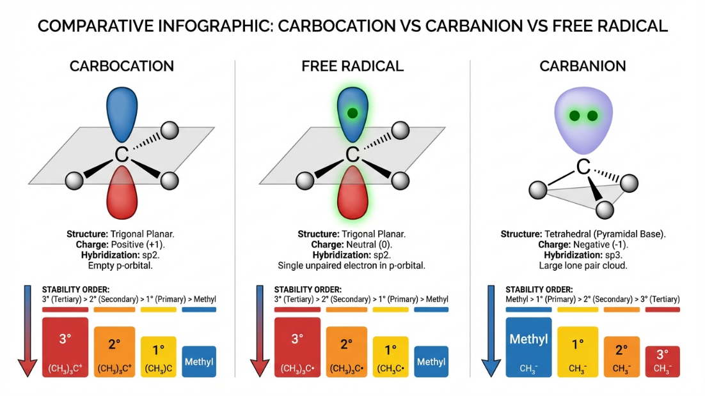
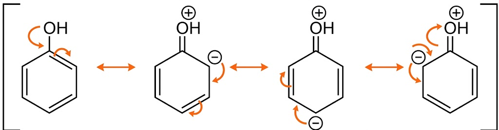

Dear Class 12 Student! This is the most critical module in all of chemistry. Class 12 Organic Chemistry (Haloalkanes, Alcohols, Aldehydes, Amines) is completely based on reaction mechanisms. If you do not understand Carbocation stability, Inductive effect, or Resonance right now, you will be forced to memorize hundreds of reactions blindly, which is impossible. Master GOC, and Class 12 Organic Chemistry becomes a game of logic!
1. Structural Representation of Organic Molecules
Organic molecules can be represented in several ways. For complex Class 12 mechanisms, we almost exclusively use Bond-line structures.
Complete Structural Formula: Shows all atoms and all individual bonds (dashes).
Condensed Structural Formula: Omits some or all of the dashes indicating covalent bonds. Identical groups attached to an atom are indicated by a subscript. (e.g., $CH_3CH_2CH_2CH_3$ or $CH_3(CH_2)_2CH_3$)
Bond-line Structural Formula: Carbon and Hydrogen atoms are not shown. Carbon atoms are assumed to be at the intersections and ends of lines. Heteroatoms (O, N, halogens) are explicitly written.
2. Basic IUPAC Nomenclature
The name of an organic compound consists of three parts: Prefix + Word Root + Suffix.
The Golden Rules
Longest Chain Rule: Select the longest continuous chain of carbon atoms containing the principal functional group and maximum number of multiple bonds.
Lowest Locant Rule: Number the chain so that the principal functional group gets the lowest possible number. If no functional group, multiple bonds get priority. Then substituents.
Alphabetical Order: When naming, substituents (Prefixes like methyl, chloro, bromo) are listed in alphabetical order.
Practice Problem 1Question: Write the IUPAC name for $CH_3 - CH(Cl) - CH_2 - C(=O) - CH_3$.
Solution:
1. Identify principal functional group: Ketone ($-C=O$). Priority over Chlorine.
2. Longest chain containing the ketone is 5 carbons (Word Root: pent).
3. Numbering: Number from the right to give the ketone the lowest locant (Position 2).
Carbon 1: $CH_3$ (right)
Carbon 2: $C=O$
Carbon 3: $CH_2$
Carbon 4: $CH(Cl)$
Carbon 5: $CH_3$ (left)
4. Substituent: Chloro group at position 4. IUPAC Name: 4-Chloropentan-2-one
3. Fission of a Covalent Bond
Organic reactions involve the breaking of old bonds and the formation of new ones. A covalent bond can break in two ways:
A. Homolytic Cleavage (Symmetrical)
Each atom takes away one of the two shared electrons. This happens in the presence of Heat, Electricity, Light, or Peroxides (Remember the acronym HELP). It generates extremely reactive Free Radicals.
Arrow Pushing: Represented by "fish-hook" (half-headed) arrows.
B. Heterolytic Cleavage (Unsymmetrical)
The more electronegative atom takes BOTH shared electrons, forming ions. This is the most common bond cleavage in organic chemistry, generating Carbocations and Carbanions.
Arrow Pushing: Represented by a standard full-headed arrow pointing towards the more electronegative atom.
4. Reaction Intermediates
These are highly reactive, short-lived species formed during bond cleavage. Predicting their stability is the key to determining the major product of an organic reaction (e.g., Markovnikov's Rule).
A. Carbocations ($C^+$)
Carbon bears a positive charge. Has only 6 valence electrons (electron-deficient).
Hybridization: $sp^2$. Shape: Trigonal Planar (with an empty p-orbital).
Why? Because alkyl groups ($CH_3-$) are electron-donating (+I effect and Hyperconjugation), which neutralizes the positive charge and stabilizes the ion.
B. Carbanions ($C^-$)
Carbon bears a negative charge. Has 8 valence electrons (electron-rich, lone pair present).
Why? Alkyl groups donate electrons (+I effect). Donating more electrons to an already negative carbon intensifies the charge, making it highly unstable!
C. Free Radicals ($C^\bullet$)
Carbon has an unpaired odd electron (7 valence electrons). Neutral but highly reactive.
Hybridization: $sp^2$. Shape: Planar.
Stability Order: Tertiary ($3^\circ$) > Secondary ($2^\circ$) > Primary ($1^\circ$) > Methyl ($CH_3^\bullet$). Same logic as carbocations (Hyperconjugation).

5. Electrophiles and Nucleophiles
Reagents in organic chemistry attack specific sites based on electron density.
Electrophiles ($E^+$): "Electron-loving". They are electron-deficient species that attack electron-rich centers (like $\pi$ bonds). They act as Lewis Acids. Examples: $H^+$, $NO_2^+$, $CH_3^+$, $AlCl_3$, $BF_3$ (incomplete octet).
Nucleophiles ($Nu^-$): "Nucleus-loving". They are electron-rich species (with lone pairs or negative charge) that attack electron-deficient centers (like carbocations). They act as Lewis Bases. Examples: $OH^-$, $CN^-$, $NH_3$, $H_2O$.
6. Electronic Displacements in Covalent Bonds
This is the most critical section. Electron density in a molecule is rarely perfectly symmetric. It shifts due to these four fundamental effects.
A. Inductive Effect (I Effect)
The permanent polarization of a $\sigma$ (sigma) bond due to differences in electronegativity. It travels along the carbon chain but weakens rapidly and is almost negligible after 3 carbon atoms.
-I Effect (Electron Withdrawing): Atoms more electronegative than Carbon pull electron density towards themselves. Makes acids stronger and carbocations less stable. Order: $-NO_2 > -CN > -COOH > -F > -Cl > -Br > -I > -OH > -OCH_3$.
+I Effect (Electron Donating): Alkyl groups push electron density away from themselves towards the carbon chain. Makes carbocations more stable. Order: $-C(CH_3)_3 > -CH(CH_3)_2 > -CH_2CH_3 > -CH_3$.
B. Electromeric Effect (E Effect)
A temporary effect. It involves the complete transfer of a shared pair of $\pi$ electrons to one of the atoms joined by a multiple bond only upon the demand of an attacking reagent. The moment the reagent is removed, the molecule reverts to its original state.
C. Resonance Effect (R or M Effect)
The flow of electrons from one part of a conjugated system to another, created by the delocalization of $\pi$ electrons or lone pairs. It is a permanent and incredibly powerful effect that stabilizes molecules. Resonance beats Inductive effect in almost all cases.
+R Effect (Electron Donating via Resonance): Groups with lone pairs attached directly to a conjugated system push electrons INTO the system (e.g., Benzene ring), increasing electron density at Ortho and Para positions. Examples: $-OH, -OR, -NH_2, -Cl, -Br$.
-R Effect (Electron Withdrawing via Resonance): Groups with multiple bonds (where the atom attached to the ring is bonded to a more electronegative atom) pull $\pi$ electrons OUT of the conjugated system. Examples: $-NO_2, -CHO, -COOH, -CN$.
Class 12 Electrophilic Substitution Rule
Groups showing +R effect are Ortho-Para directing and ring activating (except halogens, which are deactivating but still o/p directing).
Groups showing -R effect are Meta directing and strongly ring deactivating.

D. Hyperconjugation (No-Bond Resonance)
A permanent stabilizing effect. It involves the delocalization of $\sigma$ electrons of a C-H bond of an alkyl group directly attached to an atom of unsaturated system or to an atom with an unshared p-orbital (carbocation or radical).
The Alpha-Hydrogen Rule: The stability of a carbocation, free radical, or alkene is directly proportional to the number of $\alpha$-hydrogens (hydrogens attached to the carbon adjacent to the $C^+$, $C^\bullet$, or $C=C$).
$CH_3-CH_2^+$ ($1^\circ$ carbocation) has 3 $\alpha$-hydrogens = 3 structures = Less Stable.
Practice Problem 2Question: Arrange the following alkenes in order of decreasing stability: Ethene, Propene, 2-Methylpropene, 2,3-Dimethylbut-2-ene.
Solution:
Stability of alkenes depends on the number of hyperconjugative structures (number of $\alpha$-hydrogens). Count the hydrogens on the carbons directly attached to the $C=C$ double bond.
1. 2,3-Dimethylbut-2-ene: $(CH_3)_2C=C(CH_3)_2 \implies$ 4 methyl groups $\implies$ 12 $\alpha$-H.
2. 2-Methylpropene: $(CH_3)_2C=CH_2 \implies$ 2 methyl groups $\implies$ 6 $\alpha$-H.
3. Propene: $CH_3-CH=CH_2 \implies$ 1 methyl group $\implies$ 3 $\alpha$-H.
4. Ethene: $CH_2=CH_2 \implies$ 0 alkyl groups $\implies$ 0 $\alpha$-H.